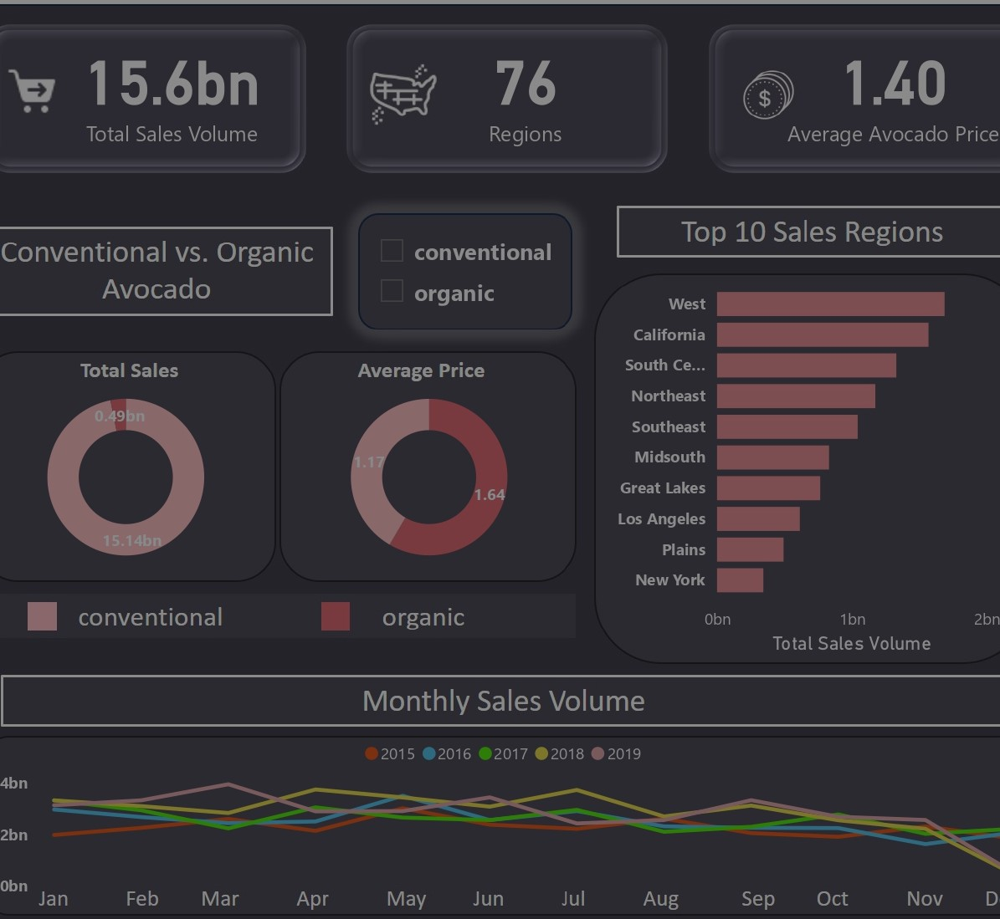

🧠 AI Model Development
Dense object detection, forecasting, anomaly detection.
PhD in Plant Biology | Computer Vision | Edge AI | Production Deployment
Designing and deploying end-to-end AI systems from model training to server integration.
I design, benchmark, and deploy end-to-end AI systems for biological, environmental, and scientific applications — from model architecture to server integration.
PhD-level training in plant biology, genetics, and microscopy (confocal & electron microscopy). Deep understanding of biological variability, imaging constraints, and experimental systems.
Dense small-object detection, architectural benchmarking (YOLO11/12, RF-DETR, Cascade R-CNN), time-series forecasting, and anomaly detection.
PyTorch → ONNX → TensorRT / OpenVINO pipelines. INT8/FP16 quantization. CPU and GPU benchmarking. Edge inference on constrained hardware.
Server deployment (OVH), automated Python inference pipelines, MongoDB integration, REST API development, export of structured outputs (CSV, graphs, labeled images).
AI should not remain a model file — it should become a working system.
I specialize in building AI solutions for biological and environmental applications where scientific understanding and engineering discipline must coexist. If you are developing intelligent imaging systems, environmental monitoring platforms, agricultural AI tools, or scientific devices — I can help design and deploy robust AI components ready for production.
I build AI systems that work outside the lab. From model architecture design to server deployment and API integration, I develop robust, production-ready solutions for biological and environmental applications.
Dense object detection, forecasting, anomaly detection.
ONNX, TensorRT, OpenVINO, edge inference, quantization.
API development, MongoDB, automation pipelines, server deployment (OVH).
Plant science, microscopy imaging, experimental systems.

Project: Avocado sales dashboard
This background enables me to design AI systems aligned with biological constraints, experimental variability, and scientific validation standards. This makes biotech companies trust you.
PyTorch, YOLO, Transformers, LSTM, CNN, Autoencoders
ONNX, TensorRT, OpenVINO, Quantization, Edge inference
Python automation, REST APIs, MongoDB, server deployment
Microscopy imaging, experimental biology, data interpretation